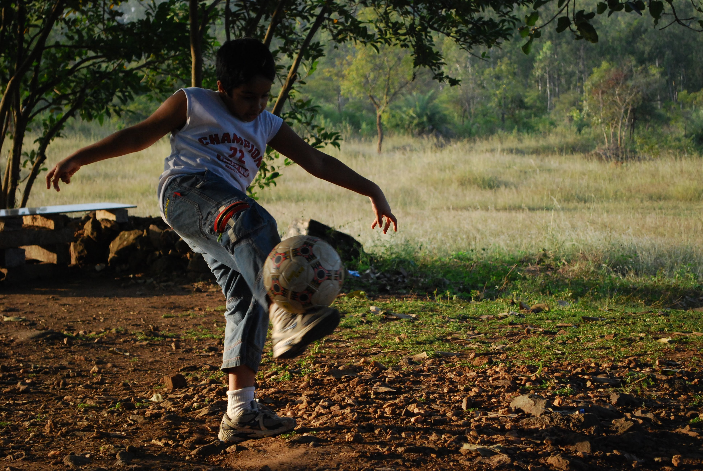

But what happens when the system tries to hold both at once?
This is what breaks.
how to perceive
🙂
Show emotion — the system sees a human experience.
😐
Stay neutral — the machine takes over. Data, labels, analysis.
✋
Cover your face — the system cannot reconcile. Everything warps.
humanmachinehallucination
01 / 05

I create because I have always been curious
Before I knew what design was, I was painting on every surface, rapping about science at school, turning nothing into something just to see what would happen.
I was the kind of kid who—subject_age: undefinedcuriosity cannot be indexedbehavior_cluster: [OVERFLOW]the machine sees a childconfidence: 12%I see the beginning of everything
[ design training — systems, typography, branding ]
I learned systems and problem solving
Communication Design gave me language, but it also made me question where expression ends and problem solving begins.
design is thinking made visible
type
grid
brand
SUBJECT — DESIGN_EDUCATION
79.1%
discipline: communication design mode_shift: art → design subtopics: [visual systems, branding, interface] sentiment: reflective identity_formation: in progressconfidence: 79.1% | trajectory: emerging
expression ends where—ERROR: boundary not foundthe system learned to speaktopic: [CORRUPTED]but language was never enough
[ enterprise — structure, scale, constraint ]
I learned structure, but something felt missing
Deloitte taught me scale and discipline, but it also showed me the limits of work that does not feel personal.
building for systems, wondering about people
product
system
scale
SUBJECT — ENTERPRISE
91.7%
employment: product designer industry: enterprise consulting client_region: United States output_mode: structured delivery personal_alignment: partialconfidence: 91.7% | the machine thrived here
I was disappearing into the systemoutput_mode: delivery delivery deliveryconfidence: 91.7%personal_alignment: ERRORbut confidence in what?
[ short film — identity, introspection, turning point ]
This changed everything
The short film was the first time I felt my work and my inner life align. It did not feel like work. It felt like becoming free.
everything before was preparation, everything after was purpose
cinema
light
self
ARTIFACT — SELF_INITIATED
67.2%
artifact_type: short film purpose: self initiated themes: [identity, introspection, transition] impact_score: unresolved trajectory_change: significantconfidence: 67.2% | the system cannot classify freedom
it felt like becoming—impact_score: cannot be measuredI stopped performing for the machinetrajectory_change: irreversiblesome things do not have confidence scores
[ now — AI, XR, perception, emerging media ]
I now build experiences that explore meaning
What I love most is building experiences that let people feel, question, and see themselves differently. Technology became a medium, not just a tool.
a life cannot be reduced to data
AI
XR
mirror
golden record
PROFILE — CURRENT_STATE
73.8%
creator_profile: interdisciplinary current_interests: [AI, XR, storytelling, immersion] predicted_output: reflective experiences intent: bridge perception and feeling trajectory: openconfidence: 73.8% | meaning cannot be reduced
you cannot classify what you have not livedpredicted_output: UNPREDICTABLEthe system is the mirrorconfidence: undefinedperception failedmeaning cannot be reducedsystem hallucinating